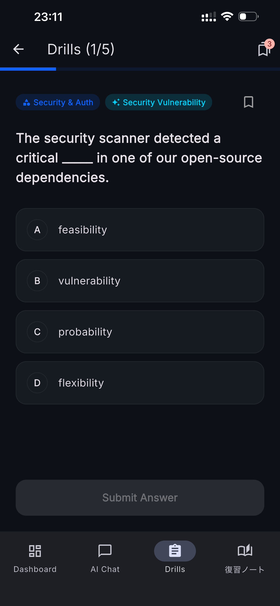
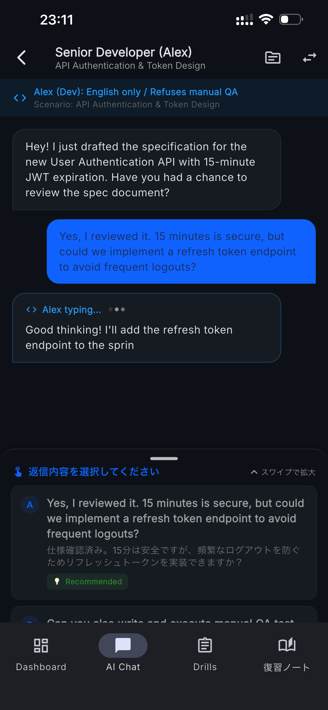
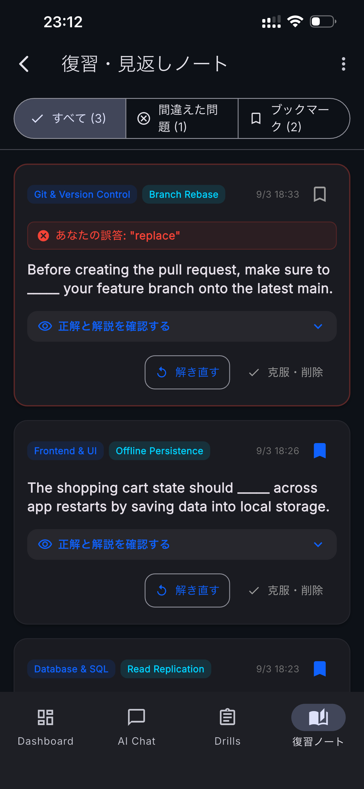

IT英語ドリル
BrSEへの道
1日数分で学ぶ、グローバルIT開発現場の実務英語。
要件定義・API・QA・アジャイルなど、
実際の開発現場で使われる英語を効率よく学習できます。
IT英語ドリル-BrSEへの道-とは？
IT英語ドリル-BrSEへの道-は、 グローバルなIT開発環境で必要となる英語コミュニケーションを 学ぶための実践型学習アプリです。
一般的な日常英会話ではなく、 ソフトウェア開発の現場で頻繁に登場する 要件定義、仕様確認、API、データベース、QAテスト、 アジャイル開発、スケジュール調整などを題材にしています。
特に、海外の開発チームとの橋渡しを担当する BrSE（Bridge System Engineer）や、 海外メンバーと仕事をするITエンジニア、 プロジェクトマネージャーなどの学習を想定しています。
💻 開発現場の英語
ソフトウェア開発で実際に登場する 技術用語やコミュニケーション表現を中心に学習します。
🤝 コミュニケーション
仕様確認や質問、問題報告、スケジュール調整など、 海外チームとのやり取りを想定した英語を学べます。
📚 スキマ時間学習
4択問題を中心とした短時間学習により、 通勤時間や休憩時間にも取り組めます。
どんなIT英語を学べる？
IT英語ドリルでは、単語だけではなく、 実際の開発プロジェクトで発生しやすい場面を想定して 英語表現を学習します。
📋 要件定義・仕様確認
Requirements、specification、scope、 acceptance criteriaなど、 要件や仕様を確認するときに使われる表現を学びます。
🔌 API・システム連携
API specification、endpoint、 request、responseなど、 技術的な仕様を説明・確認するための英語を扱います。
🗄️ データベース
Migration、schema、query、 data consistencyなど、 データベース関連のコミュニケーションを学習します。
🧪 QA・テスト
Bug、reproduction steps、 expected result、actual resultなど、 QAや不具合報告に必要な英語を学びます。
🔄 Agile・Sprint
Sprint planning、backlog、 priority、estimateなど、 アジャイル開発で使われる表現を扱います。
🤝 交渉・仕様調整
納期、優先順位、仕様変更などについて、 海外メンバーと調整するときに必要となる表現を学びます。
主な機能
4択形式の実践IT英語ドリル
実際のソフトウェア開発で起こりやすい場面を題材にした 4択問題で、IT英語を効率よく学習できます。
問題だけでなく、日本語訳や解説を確認することで、 「なぜこの表現が適切なのか」まで理解できる構成を目指しています。

開発チームを想定したAIロールプレイ
Senior Developer、QA Tester、Project Manager、 UX Designerなど、開発チームのメンバーを想定した テキストベースのロールプレイを体験できます。
単語や文法だけでなく、 質問、確認、説明、交渉など、 実際のコミュニケーションを意識した学習に活用できます。

復習ノートとオンデバイスAI
間違えた問題や後から確認したい項目を記録し、 自分の弱点を繰り返し復習できます。
対応環境では軽量なAIモデルを端末上で動作させることで、 AIとの英語練習を行える機能も用意しています。

基本的な学習方法
毎日長時間勉強するのではなく、 短い時間でも継続してIT英語に触れることを想定しています。
4択問題に挑戦
IT開発に関連する英文を読み、 適切な単語や表現を選択します。
解説と日本語訳を確認
正解だけでなく、 英文の意味や表現の使い方を確認します。
間違えた問題を復習
苦手な問題や覚えたい表現を復習ノートで 繰り返し確認します。
AIロールプレイで実践
対応している場合はAIとの会話練習を行い、 実際のコミュニケーションを意識して学習します。
こんな方におすすめ
👨💻 ITエンジニア
技術的な内容を英語で説明したり、 海外エンジニアの質問を理解したりする機会がある方。
🌏 BrSE・ブリッジSE
日本側と海外開発チームの間に立ち、 要件や仕様を英語で調整する方。
📊 プロジェクトマネージャー
海外メンバーとの進捗確認、 スケジュール調整、課題管理などを行う方。
🧪 QAエンジニア
英語で不具合報告やテスト結果を共有する必要がある方。
よくある質問
このアプリはどのような人向けですか？
一般的な英会話アプリとの違いは何ですか？
英語初心者でも利用できますか？
AI機能は必ずインターネット接続が必要ですか？
※端末によってはAIモデルを実行することができません。
短時間でも学習できますか？
関連するキーワード
IT English / BrSE / Bridge Engineer / Software Engineering / Technical English / Developer English / Business English / Offshore Development / Agile / API / QA
IT英語 / ブリッジSE / エンジニア英語 / 技術英語 / 英語学習 / 英語ドリル / 開発英語 / オフショア開発 / アジャイル / API / QA / プロジェクト管理
IT開発のための英語を、毎日の学習に。
IT英語ドリル-BrSEへの道-で、 グローバルな開発現場で必要となる英語表現を 少しずつ身につけていきましょう。
App Storeから入手する